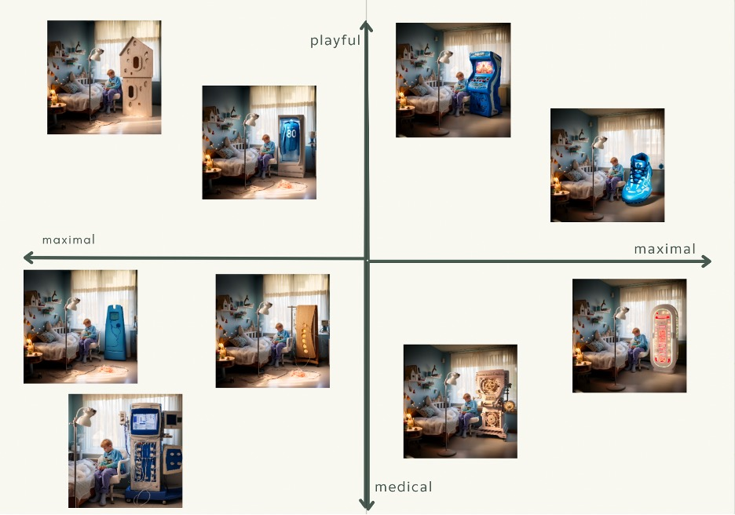

Avni Mohan
The design with a children's-style look creates a homely dialysis machine to ameliorate the overall feeling of the room, while not making you feel as if you are in hospital setting. The functionality of the HD machine is not diminished as the device can be completely contained within the playhouse.
While this design (and others like it) can improve the dialysis experience for everyone, but we are in particular targeting children for whom the effects of the treatment can be harder.
Next to the machine is a play area with plants and lighting to provide a relaxed and playful experience. This allows for more flexibility as the user reserves the ability to undergo dialysis while sleeping, playing or relaxing.
